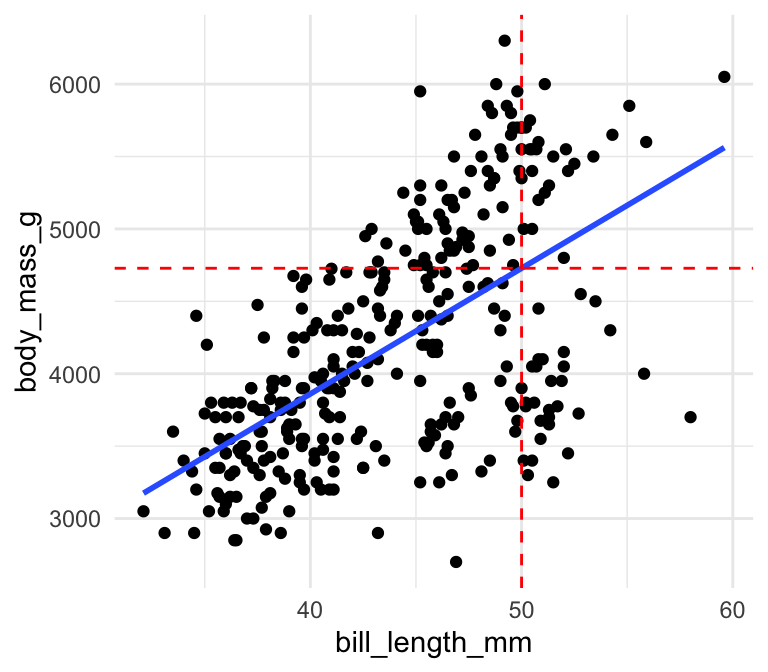

Chapter 8 Visualisering af trends


#load following packages
library(ggplot2)
library(tidyverse)
library(broom)
library(glue)
library(ggsignif)8.1 Indledning og læringsmålene
8.1.1 Læringsmålene
I skal være i stand til at
- Anvende
nest()ogmap()strukturen til at gentage en korrelation analyse over flere forskellige datasæt. - Bruge
ggplotfunktiongeom_smooth()til at visualisere lineær regression eller loess-kurver. - Kombinere
map()/nest()oglm()til at beregne regression statistikker for flere lineær regression modeller på samme tid.
8.1.2 Introduktion til chapter
I dette kapitel viser jeg flere eksempler på processen, hvor man anvender group_by() og nest() og dernæst map()-funktioner for at lave reproducebar statistiske analyser. Vi fokuserer på eksempler med korrelationanalyse og lineær regression modeller, men den overordnede ramme kan anvendes i mange forskellige kontekster.
8.1.3 Video ressourcer
OBS: Jeg sagde “antal gener” flere gange i videoerne men variablen log10_size_mb er faktisk genomstørrelse i megabases.
- Video 1: Korrelation koefficient med
nest()ogmap()- Jeg gennemgår processen langsomt med en korrelationanalyse
- Jeg introducerer
glancetil at lave outputtet fra statistikse method i tidy-form.
Link her hvis det ikke virker nedenunder: https://player.vimeo.com/video/709225323
- Video 2: Lineær regression linjer med ggplot2
- Jeg viser hvordan man tilføjer regression linjer på et plot
- Jeg sammenligne linjen med resultatet fra
lm()
Link her hvis det ikke virker nedenunder: https://player.vimeo.com/video/709225203
- Video 3: Lineær regression med
nest()ogmap()- Den proces igen fra Video 1 men anvendte på lineær regression
Link her hvis det ikke virker nedenunder: https://player.vimeo.com/video/709225158
- Video 4: Multiple linær regression model
- Sammen processen men med flere modeller og multiple uafhængige variabler
Link her hvis det ikke virker nedenunder: https://player.vimeo.com/video/709225266
- Video 5: ANOVA
- Et eksempel på
map2funktion for at sammenligne signifikans mellem modeller
- Et eksempel på
8.2 nest() og map(): eksempel med korrelation
Man kan lave en korrelation analyse i R ved at benytte cor.test(). For eksempel, forestille dig at du gerne vil finde ud af korrelationen mellem GC-indehold (variablen gc, procent G/C bases i genomet) og genomstørrelse (variablen log10_size_mb) for datasættet eukaryotes fra sidste lektion.
I følgende plotter jeg en density mellem gc og den transformerede variable log10_size_mb som er log10 genomstørrelse.
eukaryotes <- eukaryotes %>%
mutate(log10_size_mb = log10(size_mb))eukaryotes %>%
mutate(log10_size_mb = log10(size_mb)) %>%
select(log10_size_mb,gc) %>%
pivot_longer(everything()) %>%
ggplot(aes(x=value,fill=name)) +
geom_density(colour="black") +
facet_wrap(~name,scales="free") +
theme_bw()## Warning: Removed 388 rows containing non-finite values (stat_density).
Plottet ser ud til at have flere topper og jeg mistænker, at der kan være nogle sub-struturer indenfor de data - ekempelvis pga. de forskellige organismer grupper i variablen Group. I følgende benytter jeg alligevel cor.test() til at teste for korrelation mellem gc og log10_size_mb over hele datasæt:
my_cor_test <- cor.test(eukaryotes %>% pull(gc),
eukaryotes %>% pull(log10_size_mb))
my_cor_test##
## Pearson's product-moment correlation
##
## data: eukaryotes %>% pull(gc) and eukaryotes %>% pull(log10_size_mb)
## t = -15.678, df = 11118, p-value < 2.2e-16
## alternative hypothesis: true correlation is not equal to 0
## 95 percent confidence interval:
## -0.1652066 -0.1288369
## sample estimates:
## cor
## -0.1470715Outputtet fra cor.test (og mange andre metoder i R) er ikke særlig egnet til at bruge indenfor en dataframe, så jeg introducerer en funktion der hedder glance() som findes i R-pakken broom. Funktionen glance() anvendes til at tage den output fra en statistiske test (fk. cor.test()) og lave det om til et tidy dataramme. Det gøre det nemmere for eksempel til at lave et plot, eller samler op statistikker fra forskellige tests.
library(broom)
my_cor_test %>% glance()FALSE # A tibble: 1 × 8
FALSE estimate statistic p.value parameter conf.low conf.high method alternative
FALSE <dbl> <dbl> <dbl> <int> <dbl> <dbl> <chr> <chr>
FALSE 1 -0.147 -15.7 8.25e-55 11118 -0.165 -0.129 Pearson'… two.sidedVi kan se at over hele datasættet, er der en signifikant negativ korrelation (estimate -0.147 og p-værdi 8.25054^{-55}) mellem de to variabler, men vi er dog stadig mistænksom overfor eventuelle forskelligheder blandt de fem grupper fra variablen group.
Vi vil gerne gentage den samme analyse for de fem grupper fra variablen group hver for sig. En god tilgang til at undersøge det er at bruge den ramme med group_by() og nest() som vi lært sidste gange.
8.2.1 Korrelation over flere datasæt på en gang
Jeg tjekker først fordelingen af de to variabler opdelt efter variablen group:
eukaryotes %>%
select(log10_size_mb,gc,group) %>%
pivot_longer(-group) %>%
ggplot(aes(x=value,fill=group)) +
geom_density(colour="black",alpha=0.5) +
#geom_histogram(bins=40,alpha=0.5,colour="black") +
scale_fill_brewer(palette = "Set1") +
facet_wrap(~name,scales="free") +
theme_bw()## Warning: Removed 388 rows containing non-finite values (stat_density).
Vi kan se, at der er forskelligheder blandt de fem grupper og der sagtens kan forekommer forskellige sammenhænge mellem de to variabler. Vi benytter i følgende den group_by() + nest() ramme som blev introducerede sidste lektion.
Step 1: Benytte group_by() + nest()
Jeg anvender group_by på variablen group og så funktionen nest() for at adskille eukaryotes i fem forskellige datasæt (lagrede i samme dataframe i en kolonne der hedder data):
eukaryotes_nest <- eukaryotes %>%
group_by(group) %>%
nest()
eukaryotes_nest## # A tibble: 5 × 2
## # Groups: group [5]
## group data
## <chr> <list>
## 1 Other <tibble [51 × 19]>
## 2 Protists <tibble [888 × 19]>
## 3 Plants <tibble [1,304 × 19]>
## 4 Fungi <tibble [6,064 × 19]>
## 5 Animals <tibble [3,201 × 19]>Step 2: Definere korrelation funktion
Lad os definere den korrelation test mellem gc og log10_size_mb i en funktion.
- Brug
~lige i starten for at fortælle R, at vi arbejde med en funktion. - Specificer et bestemt datasæt (som er en delemængde af
eukaryotes) indenforcor.test()med.x - For det bestemt datasæt benytter jeg
.x %>% pull(gc)og.x %>% pull(size_mb)til at udtrække de relevante værdier for at udføre testencor.test.
cor_test <- ~cor.test(.x %>% pull(gc),
.x %>% pull(log10_size_mb))Vi vil gerne få statistikker fra cor.test() i en pæn form så vi tilføjer glance() til ovenstående funktion:
library(broom)
my_cor_test <- ~cor.test(.x$gc,log10(.x$size_mb)) %>% glance()Step 3: Bruge map() på det nested datasæt
Nu lad os køre vores funktion på den nested dataframe. Vi bruger map() til at lave funktionen my_cor_test for hver af de fem datasæt. Det gøres ved at bruge funktionen map() indenfor funktionen mutate() til at oprette en ny kolonne, der hedder test_stats, hvor resultaterne for hver af de fem tests lagres.
eukaryotes_cor <- eukaryotes_nest %>%
mutate(test_stats=map(data,my_cor_test))
eukaryotes_cor## # A tibble: 5 × 3
## # Groups: group [5]
## group data test_stats
## <chr> <list> <list>
## 1 Other <tibble [51 × 19]> <tibble [1 × 8]>
## 2 Protists <tibble [888 × 19]> <tibble [1 × 8]>
## 3 Plants <tibble [1,304 × 19]> <tibble [1 × 8]>
## 4 Fungi <tibble [6,064 × 19]> <tibble [1 × 8]>
## 5 Animals <tibble [3,201 × 19]> <tibble [1 × 8]>Step 4: Anvende unnest() for at kunne se resultaterne
For at kunne se statistikkerne bruger jeg funktionen unnest() på den nye variabel test_stats:
eukaryotes_cor <- eukaryotes_cor %>%
unnest(test_stats)
eukaryotes_cor## # A tibble: 5 × 10
## # Groups: group [5]
## group data estimate statistic p.value parameter conf.low conf.high
## <chr> <list> <dbl> <dbl> <dbl> <int> <dbl> <dbl>
## 1 Other <tibble> 0.489 3.80 4.22e- 4 46 0.238 0.679
## 2 Protists <tibble> 0.301 9.26 1.54e- 19 860 0.239 0.361
## 3 Plants <tibble> -0.203 -7.37 3.10e- 13 1267 -0.255 -0.149
## 4 Fungi <tibble> 0.377 31.2 3.87e-198 5884 0.355 0.399
## 5 Animals <tibble> 0.0437 2.42 1.57e- 2 3053 0.00825 0.0790
## # … with 2 more variables: method <chr>, alternative <chr>Step 5: Lave et plot fra statistikker
Vi kan bruge den direkte i et plot. Jeg fokuserer på den korrelaton koefficient i variablen estimate og omsætte den til et plot som i følgende:
cor_plot <- eukaryotes_cor %>%
ggplot(aes(x=group,y=estimate,fill=group)) +
geom_bar(stat="identity",colour="black") +
scale_fill_brewer(palette = "Set3") +
ylab("Corrlation estimate") +
theme_classic()
cor_plot
Bemærk at den overordnede process her med cor.test ligner processen hvis man anvender andre metoder såsom t.test, lm osv. Jeg gennemgår lidt om lineær regression og visualisering, og dernæst anvende processen på et eksempel med funktionen lm() og datasættet penguins.
8.3 Lineær regression - visualisering
8.3.1 Lineær trends
Man kan se i følgende scatter plot mellem bill_length_mm og body_mass_g i datasættet penguins, at der er plottet en bedste rette linje igennem punkterne, som viser, at der er en positiv sammenhæng mellem de to variabler.
## `geom_smooth()` using formula 'y ~ x'
Husk at den bedste rette linje har en formel \(y = a + bx\), hvor \(a\) er den “intercept” (skæringspunktet) og \(b\) er den “slope” (hældningen) af linjen, og idéen med simpel lineær regression er, at man gerne vil finde de bedste mulige værdier for \(a\) og \(b\) for at plotte ovenstående linje således, at afstanden mellem linjen og punkterne bliver minimeret. Uden at gå i detaljer om hvordan det beregnes, husk at man bruger funktionen lm() som i følgende:
mylm <- lm(body_mass_g~bill_length_mm,data=penguins)
mylm##
## Call:
## lm(formula = body_mass_g ~ bill_length_mm, data = penguins)
##
## Coefficients:
## (Intercept) bill_length_mm
## 388.85 86.79Intercept er således 388.85 og slope er 86.79 - det betyder, at hvis variablen bill_length_mm stiger ved 1, så ville den forventede body_mass_g stiger ved 86.79. Man kan således bruge linjen til at lave forudsigelser. For eksempel, hvis jeg målet en ny pingvin og fandt ud af, at den havde en bill_length_mm af 50 mm, kunne jeg bruge min linje som den bedste gætte på dens body_mass_g:
y <- mylm$coefficients[1] + mylm$coefficients[2] * 50
y## (Intercept)
## 4728.433Jeg forventer derfor en pingvin med en bill længde af 50 mm til at have vægten omkring 4728.4331411 g:
## `geom_smooth()` using formula 'y ~ x'
8.3.2 geom_smooth(): lm trendlinjer
Indbygget i ggplot2 er en funktion der hedder geom_smooth() som kan bruges til at tilføje den bedste rette linje til plottet. Man benytter den ved at specificere + geom_smooth(method="lm") indenfor plot-kommandoen:
ggplot(penguins,aes(x=bill_length_mm,y=body_mass_g)) +
geom_point() +
theme_minimal() +
geom_smooth(method="lm",se=FALSE)## `geom_smooth()` using formula 'y ~ x'
Det er nemt at bruge og at man kan få en konfidensinterval med, hvis man gerne vil have den: i ovenstående plot specificeret jeg se=FALSE men hvis jeg angiv se=TRUE (default), får jeg følgende plot:
ggplot(penguins,aes(x=bill_length_mm,y=body_mass_g)) +
geom_point() +
theme_minimal() +
geom_smooth(method="lm",se=TRUE)## `geom_smooth()` using formula 'y ~ x'
8.3.3 geom_smooth(): flere lm trendlinjer på samme plot
For at tilføje en bedste rette linje til de tre species hver for sig i stedet for samtlige data, er det meget nemt i ggplot: man angiver bare colour=species indenfor aesthetics:
ggplot(penguins,aes(x=bill_length_mm,y=body_mass_g,colour=species)) +
geom_point() +
theme_minimal() +
geom_smooth(method="lm",se=FALSE)## `geom_smooth()` using formula 'y ~ x'Så kan vi se, at der faktisk er tre forskellige trends her, så det giver god mening at bruge de tre forskellige linjer i stedet for kun en.
8.3.4 Trendlinjer med method=="loess"
I ggplot er vi ikke begrænset til method="lm" indenfor geom_smooth(). Lad os afpøve i stedet method="loess":
library(palmerpenguins)
penguins <- drop_na(penguins)
ggplot(penguins,aes(x=bill_length_mm,y=body_mass_g,colour=species)) +
geom_point() +
theme_minimal() +
geom_smooth(method="loess",se=FALSE)## `geom_smooth()` using formula 'y ~ x'Så kan man fange trends som ikke nødvendigvis er lineær. Men det er mere ligefrem at beskrive en lineær trend og bruge den til at beregne de nødvendige statistik til at støtte vores observationer.
8.4 Plot linear regresion estimates
For at finde vores estimates og tjekke signifikansen af de lineær trend, arbejder man direkte med den lineær model funktion lm som i ovenstående:
my_lm <- lm(body_mass_g~bill_length_mm,data=penguins)
summary(my_lm)##
## Call:
## lm(formula = body_mass_g ~ bill_length_mm, data = penguins)
##
## Residuals:
## Min 1Q Median 3Q Max
## -1759.38 -468.82 27.79 464.20 1641.00
##
## Coefficients:
## Estimate Std. Error t value Pr(>|t|)
## (Intercept) 388.845 289.817 1.342 0.181
## bill_length_mm 86.792 6.538 13.276 <2e-16 ***
## ---
## Signif. codes: 0 '***' 0.001 '**' 0.01 '*' 0.05 '.' 0.1 ' ' 1
##
## Residual standard error: 651.4 on 331 degrees of freedom
## Multiple R-squared: 0.3475, Adjusted R-squared: 0.3455
## F-statistic: 176.2 on 1 and 331 DF, p-value: < 2.2e-16Husk de tal, som er vigtige her (se også emne 1 og 2):
- Den p-værdi:
<2e-16- uafhængige variablenbill_length_mmhar en signifikant effekt. - Den R-squared værdi: - det viser den proportion af variancen i
body_mass_gsombill_length_mmforklarer:- hvis R-squared er tæt på 1, så er der tæt på en perfekt korrespondens mellem
bill_length_mmogbody_mass_g. - hvis R-squared er tæt på 0, så er der nærmeste ingen korrespondens.
- hvis R-squared er tæt på 1, så er der tæt på en perfekt korrespondens mellem
8.4.1 Anvende lm() over nested datasæt
Vi kan benytte den samme proces som ovenpå i korrelation analysen. Vi bruge group_by til at opdele efter de tre species og så nest de tre datarammer:
penguins_nest <- penguins %>%
group_by(species) %>%
nest()
penguins_nest## # A tibble: 3 × 2
## # Groups: species [3]
## species data
## <fct> <list>
## 1 Adelie <tibble [146 × 7]>
## 2 Gentoo <tibble [119 × 7]>
## 3 Chinstrap <tibble [68 × 7]>Vi vil gerne lave en model med lm som ovenpå, og vi tilføje glance() til at få de model statistikker i en pæn form.
#husk ~ og skriv .x for data og IKKE penguins
lm_model_func <- ~lm(body_mass_g~bill_length_mm,data=.x) %>% glance()Vi kører en lineær model på hver af de tre datasæt med map og ved at specifice funktion som vi defineret ovenpå. Vi bruger mutate ligesom før til at tilføje resulterende statistikker som en ny kolon der hedder lm_stats:
penguins_lm <- penguins_nest %>%
mutate(lm_stats=map(data,lm_model_func))
penguins_lm## # A tibble: 3 × 3
## # Groups: species [3]
## species data lm_stats
## <fct> <list> <list>
## 1 Adelie <tibble [146 × 7]> <tibble [1 × 12]>
## 2 Gentoo <tibble [119 × 7]> <tibble [1 × 12]>
## 3 Chinstrap <tibble [68 × 7]> <tibble [1 × 12]>Til sidste bruger vi funktionen unnest() på vores statistikker:
penguins_lm <- penguins_lm %>%
unnest(cols=lm_stats)
penguins_lm## # A tibble: 3 × 14
## # Groups: species [3]
## species data r.squared adj.r.squared sigma statistic p.value df logLik
## <fct> <list> <dbl> <dbl> <dbl> <dbl> <dbl> <dbl> <dbl>
## 1 Adelie <tibble> 0.296 0.291 386. 60.6 1.24e-12 1 -1076.
## 2 Gentoo <tibble> 0.445 0.440 375. 93.6 1.26e-16 1 -873.
## 3 Chinst… <tibble> 0.264 0.253 332. 23.7 7.48e- 6 1 -490.
## # … with 5 more variables: AIC <dbl>, BIC <dbl>, deviance <dbl>,
## # df.residual <int>, nobs <int>Så kan vi se, at vi har fået en dataramme med vores lineær model statistikker. Jeg tager r.squared og p.value og omsætter dem til et plot for at sammenligne dem over de tre species af pingviner.
penguins_lm %>%
select(species,r.squared,p.value) %>%
mutate("-log10pval" = -log10(p.value)) %>%
select(-p.value) %>%
pivot_longer(-species) %>%
ggplot(aes(x=species,y=value,fill=species)) +
geom_bar(stat="identity") +
scale_fill_brewer(palette = "Set2") +
facet_wrap(~name,scale="free",ncol=4) +
coord_flip() +
theme_bw()
8.4.2 Funktion glue() for at tilføje labels
Det kan være nyttig at tilføje nogle etiketter til vores plots med statistikkerne, vi lige har beregnet. Til at gøre det kan man bruge følgende kode. Vi tage vores datasæt penguins_lm med vores beregnet statistikker og bruge den til at lave en datasæt som kan bruges i geom_text() i vores trend plot. Funktionen glue() (fra pakken glue) er bare en nyttig måde at tilføj de r.squared og p.value værdier sammen i en “string,” som beskriver vores forskellige trends (lidt som paste fra base-R)
library(glue) # for putting the values together in a label
label_data <- penguins_lm %>%
mutate(
rsqr = signif(r.squared, 2), # round to 2 significant digits
pval = signif(p.value, 2),
label = glue("r^2 = {rsqr}, p-value = {pval}")
) %>%
select(species, label)
label_dataFALSE # A tibble: 3 × 2
FALSE # Groups: species [3]
FALSE species label
FALSE <fct> <glue>
FALSE 1 Adelie r^2 = 0.3, p-value = 1.2e-12
FALSE 2 Gentoo r^2 = 0.44, p-value = 1.3e-16
FALSE 3 Chinstrap r^2 = 0.26, p-value = 7.5e-06Vi kan tilføje vores label data indenfor geom_text(). x og y specificere hvor i plottet teksten skal være, og husk at specificere data=label_data og label=label skal stå indenfor aes() når det handler om en variable i label_data.
ggplot(penguins, aes(body_mass_g, flipper_length_mm, colour=species)) +
geom_point() +
geom_smooth(method = "lm", se = FALSE) +
geom_text(
x = 5500,
y = c(175,180,185),
data = label_data, aes(label = label), #specify label data from above
size = 4
) +
scale_color_brewer(palette = "Set2") +
theme_minimal() ## `geom_smooth()` using formula 'y ~ x'
8.5 Multiple regression and model comparison
Man kan også bruge den samme ramme i ovenstående til at sammenligne forskellige modeller - her definer jeg lm_model_func der har kun sex som uafhængige variabel og så bygger jeg op på den model ved at definere lm_model_func2 og lm_model_func3, hvor jeg tilføjer ekstra uafhængige variabler bill_length_mm og flipper_length_mm. Jeg er interesset i, hvor meget af variansen i body_mass_g de tre variabler forklarer tilsammen, og om der er forskelligeheder efter de tre arter i species.
lm_model_func <- ~lm(body_mass_g ~ sex ,data=.x)
lm_model_func2 <- ~lm(body_mass_g ~ sex + bill_length_mm ,data=.x)
lm_model_func3 <- ~lm(body_mass_g ~ sex + bill_length_mm + flipper_length_mm ,data=.x)Bemærk at jeg endnu ikke har tilføjet glance() her men jeg har tænkt mig at gøre det lidt senere i processen for at undgå, at jeg får alt for mange statistikker i min dataframe med mine resultater. Jeg anvender først group_by() efter species og nest():
penguins_nest <- penguins %>%
group_by(species) %>%
nest()
penguins_nest## # A tibble: 3 × 2
## # Groups: species [3]
## species data
## <fct> <list>
## 1 Adelie <tibble [146 × 7]>
## 2 Gentoo <tibble [119 × 7]>
## 3 Chinstrap <tibble [68 × 7]>Her bruger jeg map tre gange indenfor sammen mutate, for at bygge de tre modeller for hver art (ni modeller i alt).
penguins_nest_lm <- penguins_nest %>%
mutate(
model_sex = map(data,lm_model_func),
model_sex_bill = map(data,lm_model_func2),
model_sex_bill_flipper = map(data,lm_model_func3))
penguins_nest_lm## # A tibble: 3 × 5
## # Groups: species [3]
## species data model_sex model_sex_bill model_sex_bill_flipper
## <fct> <list> <list> <list> <list>
## 1 Adelie <tibble [146 × 7]> <lm> <lm> <lm>
## 2 Gentoo <tibble [119 × 7]> <lm> <lm> <lm>
## 3 Chinstrap <tibble [68 × 7]> <lm> <lm> <lm>Nu vil jeg gerne udtrækker nogle statistikkker fra modellerne så jeg kan sammenligne dem. Jeg vil gerne lave samme process på alle ni modeller - hvor jeg benytter functionen glance til at få outputtet i tidy-form, og så udtrækker r.squared bagefter til at undgå, at der kommer alt for mange statistikker i min nye dataframe.
get_r2_func <- ~.x %>% glance() %>% pull(r.squared)Nu gælder det om at køre ovenstående funktion på alle mine modeller, som er lagret i tre kolonner, model_sex,model_sex_bill og model_sex_bill_flipper. Jeg gøre det indenfor map så det bliver også kørte til hver af de tre arter.
penguins_nest_lm <- penguins_nest_lm %>%
mutate(model_sex_r2 = map_dbl(model_sex, get_r2_func),
model_sex_bill_r2 = map_dbl(model_sex_bill, get_r2_func),
model_sex_bill_flipper_r2 = map_dbl(model_sex_bill_flipper, get_r2_func))
penguins_nest_lm %>% select(species,model_sex_r2,model_sex_bill_r2,model_sex_bill_flipper_r2)## # A tibble: 3 × 4
## # Groups: species [3]
## species model_sex_r2 model_sex_bill_r2 model_sex_bill_flipper_r2
## <fct> <dbl> <dbl> <dbl>
## 1 Adelie 0.545 0.563 0.602
## 2 Gentoo 0.649 0.691 0.716
## 3 Chinstrap 0.291 0.331 0.476Omsætte til et plot:
penguins_nest_lm %>%
pivot_longer(cols=c("model_sex_r2","model_sex_bill_r2","model_sex_bill_flipper_r2")) %>%
ggplot(aes(x=species,y=value,fill=name)) +
geom_bar(stat="identity",position="dodge") +
theme_minimal()
Man kan se i plottet, at body_mass_g i species “Gentoo” er bedste forklaret af de tre varibler, og den lavest r.squared er tilfælde hvor variablen sex er dene eneste uafhængig variable og species er “Chinstrap.”
8.5.1 anova for at sammenligne de forskellige modeller
Grunden til, at jeg valgt at bruge glance() i en ny funktion for at udtrække r.squared værdier, var fordi jeg gerne ville bevare mine modeller i rå form, så de kan bruges indenfor anova(). Med anova() kan jeg sammenligne to modeller direkte og får således en p-værdi hvor man teste hypotesen, hvor den ekstra variabler i den ene model forklarer den afhængig variabel signifikant (når man tager højde for de variabler, der er fælles til både modeller).
I følgende skriver jeg en funktion hvor jeg kan sammenligne to modeller med anova og udtrækker p-værdien:
aov_func <- ~anova(.x,.y) %>% tidy() %>% pluck("p.value",2)- ~ fordi det er en funktion (som jeg benytter for hver art og model sammenligning - 9 gange i alt!)
anovafor at sammenligne modellerne som er betegnet ved.xog.y(vi anvendermap2som tager to input i stedet for én som imap)tidy()er ligesom glance men angiver sumamry statistikker og flere linjer - herunder p-værdienpluck- jeg vil have kun én statistik (“p.value”) - og det er lagret i anden plads.
Se følgende kode for når man anvende anova og tidy på modellerne model_sex og model_sex_bill i species “Adelie” (da jeg benyttet pluck med “1” som betyder den først plads i listen):
myaov <- anova(penguins_nest_lm %>% pluck("model_sex",1),
penguins_nest_lm %>% pluck("model_sex_bill",1))
myaov %>% tidy #p.value for comparing the two models is in the second position## # A tibble: 2 × 6
## res.df rss df sumsq statistic p.value
## <dbl> <dbl> <dbl> <dbl> <dbl> <dbl>
## 1 144 13884760. NA NA NA NA
## 2 143 13332955. 1 551805. 5.92 0.0162Man kan se, at p-værdien er 0.016 som er signifikant og betyder at den mere ‘indviklet’ model der også inddrager bill_length_mm er den model, vi accepteror (effekten af variablen bill_length_mm på body_mass_g er signifikant).
Man kan lave en lignende sammenligne mellem samtlige par modeller over de tre arter:
penguins_nest_lm <- penguins_nest_lm %>%
mutate(model_sex_vs_model_sex_bill = map2_dbl(model_sex,model_sex_bill,aov_func),
model_sex_vs_model_sex_bill_flipper = map2_dbl(model_sex,model_sex_bill_flipper,aov_func),
model_sex_bill_vs_model_sex_bill_flipper = map2_dbl(model_sex_bill,model_sex_bill_flipper,aov_func))
penguins_nest_lm %>% select(species,model_sex_vs_model_sex_bill,model_sex_vs_model_sex_bill_flipper,model_sex_bill_vs_model_sex_bill_flipper)## # A tibble: 3 × 4
## # Groups: species [3]
## species model_sex_vs_model_sex_bill model_sex_vs_model_sex… model_sex_bill_…
## <fct> <dbl> <dbl> <dbl>
## 1 Adelie 0.0162 0.0000730 0.000273
## 2 Gentoo 0.000142 0.00000592 0.00193
## 3 Chinstrap 0.0540 0.0000621 0.0000795Det kunne være nyttigt at inddrage p-værdier i ovenstående plot med r.squared værdierne, til at se om, der er en signifikant effekt når man tilføjer flere variabler til modellen samtidig at r.squared stiger. I følgende omsætter jeg r.squared statistikker til kun “Chunstrap” i et plot:
library(ggsignif)
stats_plot <- penguins_nest_lm %>%
filter(species=="Chinstrap") %>%
pivot_longer(cols=c("model_sex_r2","model_sex_bill_r2","model_sex_bill_flipper_r2")) %>%
ggplot(aes(x=name,y=value,fill=name)) +
geom_bar(stat="identity",position="dodge") +
coord_flip() +
theme_bw()
stats_plot
I følgende tilføjer jeg funktionen geom_signif til plottet - det tillader, at jeg kan tilføje signifikans linjer/annotations til plottet - dvs. viser hvilke to modeller jeg sammenligner, og angiver stjerne efter beregnede p-værdierne. Du er velkommen til at kopier mine kode og tilpasse til egen behov.
- Når jeg sammenligne modellerne “model_sex” og “model_sex_bill” i “Chinstrap,” er p-værdien over 0.05, så tilføjelsen af
bill_length_mmi modellen var ikke signifikant - jeg giver ingen stjerner men skriver “.” til at matcher outputtet ilm. - Når jeg sammenligne modellerne “model_sex” og “model_sex_bill_flipper” kan jeg se at p-værdien er under 0.05, så der er en signifikant effekt -
bill_length_mmogflipper_length_mmforklarer den afhængige variabelbody_mass_g, ud over variablensex. Jeg angiver "***" fordi p-værdien er under 0.001 (Se signif. codes ilmsummary). - Indstillingen
y_positionfortæller hvor jeg vil placerer linjerne.
stats_plot +
geom_signif(comparisons = list(c("model_sex_r2", "model_sex_bill_r2")),
annotations=".", y_position = 0.35, tip_length = 0.03) +
geom_signif(comparisons = list(c("model_sex_bill_r2", "model_sex_bill_flipper_r2")),
annotations="***", y_position = 0.5, tip_length = 0.03) +
geom_signif(comparisons = list(c("model_sex_r2", "model_sex_bill_flipper_r2")),
annotations="***", y_position = 0.55, tip_length = 0.03)
8.6 Problemstillinger
0) Quizzen på Absalon.
Husk at have indlæste følgende:
library(tidyverse)
library(broom)
data(mtcars)
data(iris)1) Korrelation øvelse
Brug
data(mtcars)ogcor.test()til at lave et test af korrelationen mellem variablerneqsecogdrat.Tip: hvis du foretrækker at undgå
$i analysen til at speciefice en kolon indenforcor.test()kan du brugemtcars %>% pull(qsec)i stedet formtcars$qsec.Tilføj funktionen
glance()til din resultat fracor.test()til at se de statistikker i tidy form. Kan du genkende de statistikker fracor.test()i den resulterende dataramme?
2) Nesting øvelse
For datasættet msleep anvende group_by() og nest() til at få en nested datasæt opdelt efter variablen vore.
- Tilføj en ny kolon med
mutateder heddern_rowssom beregner antallet af række i hver af de fire datasæt - husk følgende struktur (først angiv kolonnen som indeholder vores list af datasæt, og så angive funktionen som beregner antallet af række).
mtcars %>%
group_by(cyl) %>%
nest() %>%
mutate("n_rows" = map(???,???)) #erstatte ??? her- I dette tilfælde kan man ændre
maptilmap_dbl.
4) Multiple korrelation
Vi vil gerne beregne den korrelation mellem variablerne sleep_total og sleep_rm til hver af de tre datasæt.
- Tilpasse følgende funktion så at vi teste korrelation mellem de to variabler.
- Tilføje
glance()så at vi få vores data i tidy form.
cor_test <- ~cor.test(????,???) #erstatte ??? og tilføj glance funktion- Brug map i nedenstående med din funktion til at beregne de korrelation til hver af de fire datasæt.
- Unnest din nye kolonne bagefter
msleep %>%
group_by(vore) %>%
nest() %>%
mutate(cor_stats = ???) #erstatte ??? her og husk unnest- Lave barplots af
estimateog-log10(p.value)med den resulterende dataramme
6) Linear regression øvelse
Brug data(iris) og anvende lm() til at finde den forventet Petal.Length med hensyn til Petal.Width.
- Hvad er den intercept og slope af den beregnet linje?
- Tilføj funktionen
glance()og angive værdierr.squaredogp.value.
lm(??? ~ ???,data=???) #erstatte ???7) Lave et scatter plot af Petal.Width på x-aksen og Petal.Length på y-aksen.
- Tilføje linjen
geom_smooth(method="smooth") - Ændre linjen til
geom_smooth(method="lm") - Ændre linjen til
geom_smooth(method="lm",se=FALSE) - Nu specificer en forskellige farve efter Species. Er der forskellige trends?
Vi vil gerne lave samme analyse for hver af de tre Species.
8) Lineær regression øvelse over multiple datasæt
Vi vil gerne udføre lineær regression med Petal.Length og Petal.Width som i 6), men opdelt efter de tre Species.
* Lave en funktion ved at tilpasse følgende kode. Passe på hvad data skal være lig med her (når vi skriver en funktion).
* Tilføj glance().
lm_model_func <- ???lm(??? ~ ???,data=???) #erstat ??? - Anvende
group_by()ognest() - Anvende
map()med din funktion indenformutate()til at tilføje en ny kolon som hedderlm_statstil din dataramme. - Husk at
unnestkolonnenlm_statstil at kunne se statistikker.